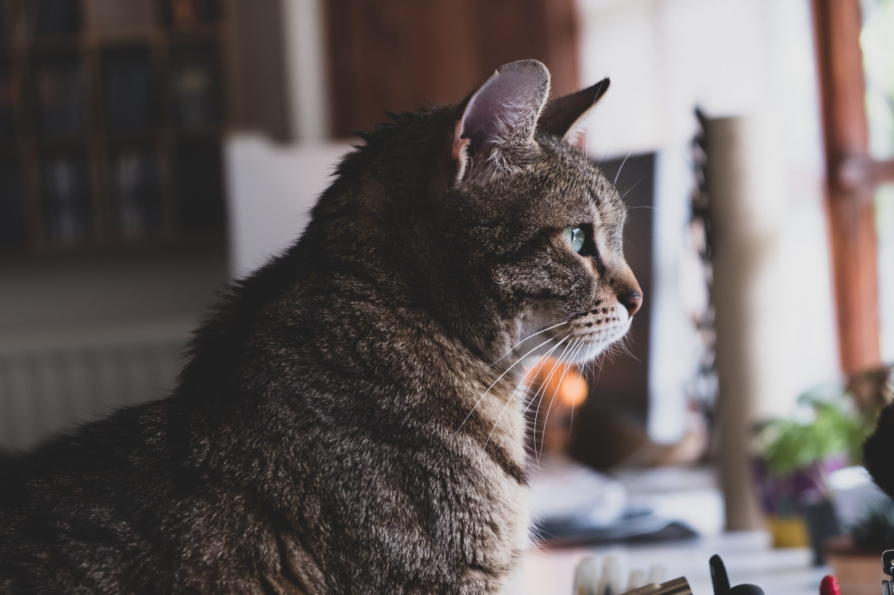

>
애완묘의 장점
고양이를 반려동물로 키울 때의 장점은 여러가지가 있다.
청결함에 따른 대소변 처리
같은 반려동물인 강아지와 비교하였을 때 고양이 사육에 있어서 큰 장점이다. 그루밍에 따른 철저한 청결관리에 자신의 구역 관리에 뚜렷한 동물이기에 모래 위에서만 대소변을 보려는 습성이 있다. 그렇기에 적당한 곳에 모래를 깔아두면 그곳으로 들어가 변을 보고 나온다. 물론 그에 맞게 화장실의 모래를 제때 갈아줘야 한다.
조용함
이 또한 고양이의 큰 장점이며, 개는 짖는 소리 때문에 이웃집과의 갈등 등 피곤한 문제가 생길 수 있지만, 고양이는 자신이 만족 하는 상태에서는 거의 울지 않기 떄문에 평소 매우 조용한 편이다. 하지만 발정기 등 시끄러운 시기가 존재하기에 아예 조용하다곤 볼 수 없다.
독립성
자기 구역을 갖는 특징이 있으며, 야생에서 다른 고양이와 투쟁하는 등 개에 비하여 훨씬 독립적인 성격을 갖고있다. 그러기에 집고양이 또한 개에 비하면 훨씬 덜 의존적인 성격이며 앞가림을 잘한다.